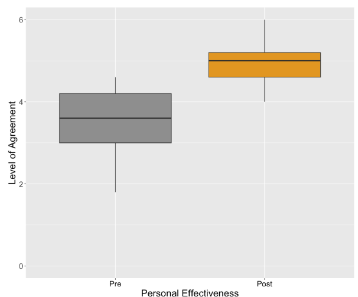
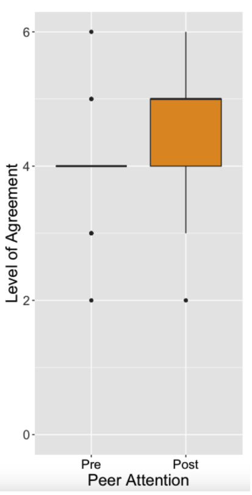
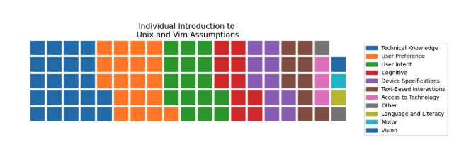
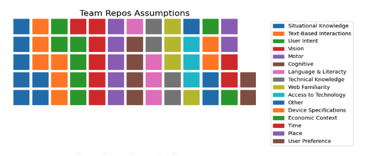
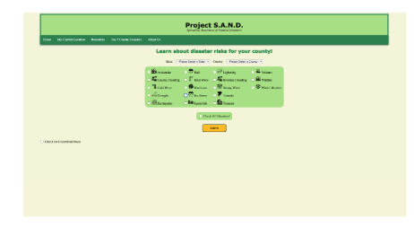
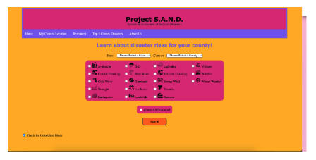

Critical Pedagogy
in Software Design
Motivations, Methods, Results
Motivations
There are several well-documented instances of software failing to accommodate all people. One famous example is soap dispensers that do not recognize users with deeper skin tones. Designers are likely not intentionally trying to exclude users. Rather, they have not been trained to think about inclusive design practices. This is a systemic issue that can be addressed through education.
These cases are probably not malicious attempts to exclude users, but more likely the result of implicit decision making. Intentional or not, these decisions result in differential impact for many marginalized users. It is for this reason that integrating inclusive design principles into software design education is necessary in a world growing toward technological ubiquity. That integration begins in undergraduate teaching.
Other researchers have attempted to incorporate ethics and critical pedagogy into Computer Science education. As Michelle Tran has found, integration of ethics and critical pedagogy into one final class at the end of college was not necessarily enough to stimulate significant growth of ethical understanding. It was found by Rosalinda Garcia that integration throughout the entire academic progression was much more effective.
With that in mind, software design was the perfect candidate to introduce concepts of ethics and critical pedagogy, as the course is primarily taken by first and second-year students.
Because measuring ethical reasoning in computing is difficult, previous research has almost entirely been composed of qualitative analysis. We are among the first to use a validated survey—titled the Crit Con Index—to measure changes in attitudes towards critical reflection and agency.
This allowed us to quantitatively tackle the extent to which the integration of critical pedagogy in post-secondary software design education changes students’ attitudes. With qualitative analysis, we were further able to make inferences toward how and why critical pedagogy in software design education may shape students’ reflection and agency.
Methods
For this study, twenty-three Carleton students consented to having their classwork data analyzed, while five additionally consented to interviews. Jean integrated critical pedagogy into her Software Design class at Carleton College, utilizing two strategies from prior work. The first strategy was the CIDER elicitation technique. In the class—after every technical milestone—students used the CIDER elicitation technique to constantly rework their projects to be more inclusive. The second strategy was making explicit the values embedded in technology. By revealing the values ingrained in technology, students were able to recognize things in their technology that had previously gone unnoticed. These class assignments all build up to a database-backed website in Flask, which was later analyzed.
To gather quantitative data, students took the Critical Reflection and Agency in Computing Index—CritCon Index for short. This index measured attitudes towards critical reflection and agency in Computer Science. Students took this test at the start and end of class. Then, these non-parametric statistical tests were analyzed for our research. We used Cronbach’s alpha to check the reliability of results across operationalizations (basically, the grouping of questions meant to gauge the same idea). If the operationalization had a Cronbach’s alpha over 0.7, it was analyzed with an average value. If the operationalization did not pass the threshold, it was not averaged and questions were analyzed separately. Depending on the symmetry of the question’s/operationalization’s distribution, either the Wilcoxon Signed Rank test or the Sign Test was utilized. Wilcoxon was used on symmetric data while the Sign Test was used on asymmetric data. We then gathered the r effect sizes from Wilcoxon Signed Rank Test results and the Cliff’s delta from Sign Test results. The larger the value, the greater the effect the class had at tackling those specific concepts in technology.
For qualitative analysis, Aurelia and I led the analysis under the guidance of Aadarsh and Jean. The analysis of critical reflection in this study was conducted in two phases: team analysis and individual analysis. Data was sourced from student work, team repositories, and in-class activities. Aurelia and I used the CIDER framework to guide initial coding of assumptions and developed additional categories through Affinity Diagramming. We inductively created a framework for proposed improvements. Our work process was to individually code the content, and then come to consensus together on the final codes. Additional categories were made because some of the codes were too general in the original framework and needed specificity. For example, “Prior Knowledge” was broken down into categories like “Situational Knowledge,” “Technical Knowledge,” or “Web Familiarity.” A refined codebook was implemented after cycles of work. The improvements that users came up with were inductively coded into broad categories. In the case of disagreements between Aurelia and I, we settled through discussion.
In addition to coding reflections and proposed improvements, Aurelia and I conducted a Critical Agency Analysis to evaluate whether teams implemented their proposed improvements onto their website or not. If the proposed implementations were implemented, then they were tallied with a “yes.” If not, a “no” was tallied.
In addition to analyzing student reflection, we also qual-coded some assignments for Critical Agency Analysis. We started out with a deductive framework to analyze assignments with; however, after our first cycle we found the framework given incongruent with the data gathered. We then created our own inductive framework that we then coded with. This framework evolved over four rounds of coding and included major categories: Factors Behind Differential Impact, Kinds of Impact, and Values. The final coding process was once again independent coding followed by consensus-building conversations between Aurelia and I. All disputes were resolved through conversation.
The final portion of qualitative analysis focused on interviews with five students from the software design class. Aadarsh conducted and anonymized the Zoom interviews, centered around the integration of ethics in software design. Aurelia, Aadarsh, Jean, and I developed a qualitative codebook once again through multiple rounds of inductive analysis. The four overarching categories were Considerations, Pathways to Reflection, Anticipated Outcomes, and Responsible Practices. Each had further developed subcategories. This codebook went through three rounds of refining. Then Aurelia and I independently qual-coded the five interviews—before once again coming together for the final consensus. A final post-hoc analysis was conducted with Jean and Aadarsh, and synthesized higher-level themes found across the established codes.
Results
The largest takeaways from the collected data center around students’ personal effectiveness and attitudes towards marginalized perspectives. The personal effectiveness of students had major growth between pre-class to post-class data collection according to the CritCon Index results.

What is Personal Effectiveness, you may ask? Well, Personal Effectiveness refers to students’ belief that they:
- Have a good understanding of ethical & social impacts of software development
- Can participate in discussions of ethics & social impacts of CS
- Can uphold ethical conduct in software development
- Are better informed than their peers
- Can effectively voice their own perspectives on ethical issues

Another key finding from our quantitative data centers around peer attention. Students’ beliefs that their peers would be attentive to ethical discussion saw moderate growth after taking Software Design.
There were several notable qualitative findings as well. Through looking at the CIDER classwork and qual-coding the given assumptions across assignments, a trend towards greater diversity in assumptions becomes apparent over time. The first CIDER classwork shows most assumptions are based upon “Technical Knowledge”; this contrasts with each team’s final assignment where there is a larger diversity in assumptions such as “Situational Knowledge”, “Motor”, “Vision”, etc.


This increase in diversity of assumption implies that students incorporated larger considerations towards how their design interacts with all users.
Not only was there a noticeable increase in student reflection, but there was also a noticeable amount of student agency related to implementing improvements.

The most common project fixes were related to Accessibility to People (Abilities). All seven groups implemented changes in this category to make their program more accessible to all people. One example being an implemented “colorblind mode” that made the website more accessible to people with visual impairments. (The second screenshot shows colorblind mode enabled)


It was interesting to find that most implemented improvements were related to things such as colorblind modes and screen reading. This is likely because those features were directly taught in the class to students.
Interviews unlocked further understanding of why critical pedagogy in Software Design may shape students’ critical reflection and agency — specifically including marginalized perspectives: from ideals to practice.
From interviews, we learned students evolved from having a broad understanding of the importance of marginalized perspectives to developing more concrete strategies for inclusive design. All five students spoke of considering impacts on individuals and recognized people experience technology differently based on identity factors such as gender, race, and ability. All five students spoke of inclusion as a value in their work. Overall, the course helped students internalize inclusive and ethical design practices, driven by critical reflection and tools like CIDER.